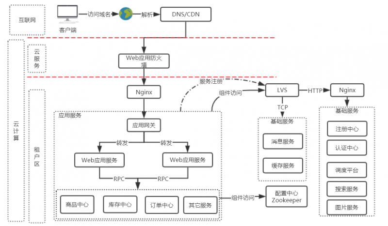
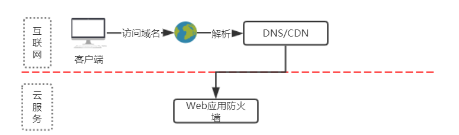
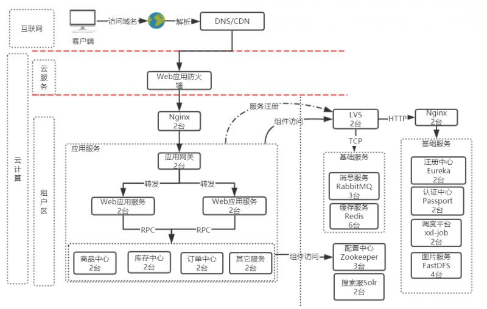

最近参与了 公有云微服务项目，已经有一段时间未公开发表。通过这次改造公有云微服务项目的实践过程，分享一下公有云微服务网络架构，及服务部署方案。
每个平台的网络架构图都类似，但细节根据自有服务有组件又各不一样，别人的架构拿过来不一致适合你的架构，那么首先要了解每层架构及每个服务的职责，以及服务与服务之间的交互逻辑。我们根据私有云的架构迁移过来，保持了部分架构，补充了原来在私有云部署中公共组件部分。迁移到公有云后，一些公共组件由我们自己搭建并运维。整理总览图请看下图:

外网层也是网络架构中最上一层，是指服务报露在互联网中使用的，通过IP或域名的方式访问服务。访问的域名通过解析服务器，解析到指定的互联网机器。
互联网机器一般是使用云服务的方式构建。
云计算按照服务类型大致可以分为三类：
按照云计算服务的部署方式和服务对象的范围可以将云计算分为三类，即公共云、私有云和混合云。
云服务是基于互联网的相关服务的增加和使用，通常涉及互联网动态易扩展且经常是虚拟化的资源。云是网络、互联网的一种比喻说法。
云服务指通过网络以按需、易扩展的方式获得所需服务。这种服务可以是IT和软件、互联网相关，也可是其他服务。它意味着计算能力也可作为一种商品通过互联网进行流通。

这一层我们使用云服务提供的WAF防火墙，用来于外网与租户区之间做了安全防护。WAF防火墙中增加一个vip来管理租户区的应用服务。
租户区是通过云服务购买的ECS服务器、云数据库RDS Mysql版、云数据库Redis版、对象存储OSS、云通信-短信服务、弹性公网IP等资源。
根据以上资源根据我们的服务划分两类：
应用服务的入口是Nginx，应用服务又分三层：统一网关层、Web应用服务层、原子化服务层。
由防火墙的VIP打到应用服务的Nginx上面，Nginx代理到应用网关，所有网络流量都经过网关，由网关统一服务转发。转发只能转发到Web应用服务，不能转发到中台服务。Web应用服务与中台服务或中台服务之间访问采用RPC远程调用。
应用服务需要调用基础组件时根据可扩展方案，访问需要经过VIP。应用服务访问的基础组件都不是真实的机器 ，而是VIP(Virtual IP Address)。
是根据业务需求，实现业务逻辑。组合中台服务，达到实现业务需求的目地。
在图中根据自己的业务划分自己的服务，这里只是简单罗列了一下几个服务作为代表。但不局限于这几个服务
互联网电商行业，根据业务需求不断变更，服务要求不断稳定。不一业务需求变更，而造成服务的不稳定性。那么根据职责模块划分为多个原子化服务，并根据职责划分到各个系统中。从而达到中台服务负责基础数据及稳定业务服务，多变或可定制化服务由Web应用服务提供。
在图中根据自己的业务划分自己的服务，这里只是简单罗列了一下几个服务作为代表。但不局限于这几个服务
在高可用方案中，为了保证最低高可用每个系统均分配两台ECS，保证高可用。
基础组件的入口是LVS，在应用服务中提到LVS中需要分配VIP。
VIP（虚拟IP）是比较常见的一个用例就是在系统高可用性（High Availability HA）方面的应用，通常一个系划外的情况而发统会因为日常维护或者非计生宕机，为了提高系统对外服务的高可用性，就会采用主备模式进行高可用性的配置。当提供服务的主机M宕机后，服务会切换到备用主机S继续对外提供服务。而这一切用户是感觉不到的，在这种情况下系统对客户端提供服务的IP地址就会是一个虚拟IP，当主机M宕机后，虚拟IP便会漂浮到备机上，继续提供服务。
在这种情况下，虚拟IP就不是与特定计算主机或者特定某个物理网卡对应的了，而是一种虚拟或者是说逻辑的概念，它是可以自由移动自由漂浮的，这样一来既对外屏蔽了系统内部的细节，又为系统内部的可维护性和扩展性提供了方便。
LVS属于四层代理， 在组件中采用TCP协议的由：
除此之外，基础组件中，还包括：配置中心 zookeeper、搜索服务 Solr 这两个服务不经过LVS代理，直接由应用服务访问。
因每个组件的实现原理不一样，使用的机器数量也不一样。他们每个服务的高可用后台单独为每个组件详细描述。
最后，根据以上描述画出整体网络架构图：

致此，讲解了我们在这些公有云微服务项目的实践及部署方案，整体网络架构图如下：
以上是根据个人在这个项目中的实践和理解，若你有更好的方案或想法可关注 微信公众号"猿码"，发表你的看法。或在文章底部留言，建议我们对技术的热爱~~~~
你的关注会继续发表相关话题，及相关技术。
再次感谢您已看完全文，欢迎关注微信公众号猿码 ，您的关注我会持续更新文章！